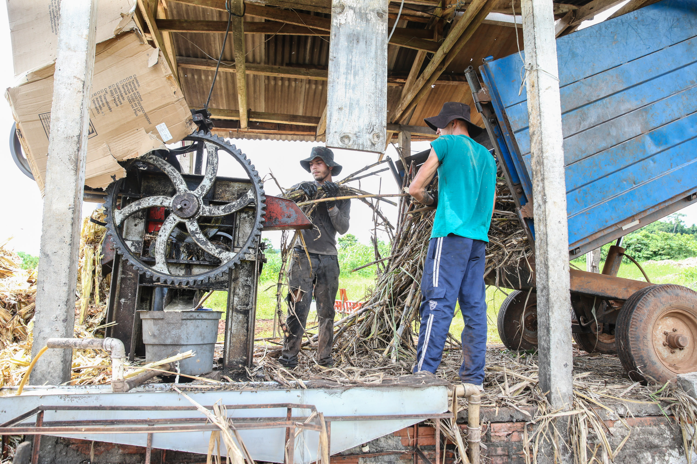
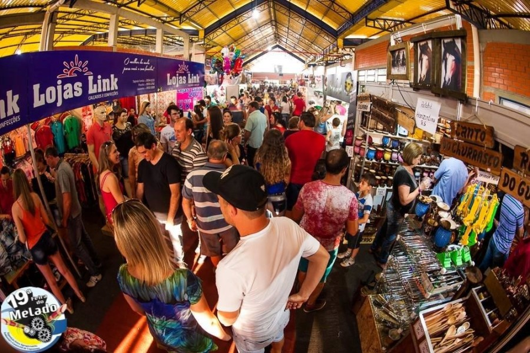
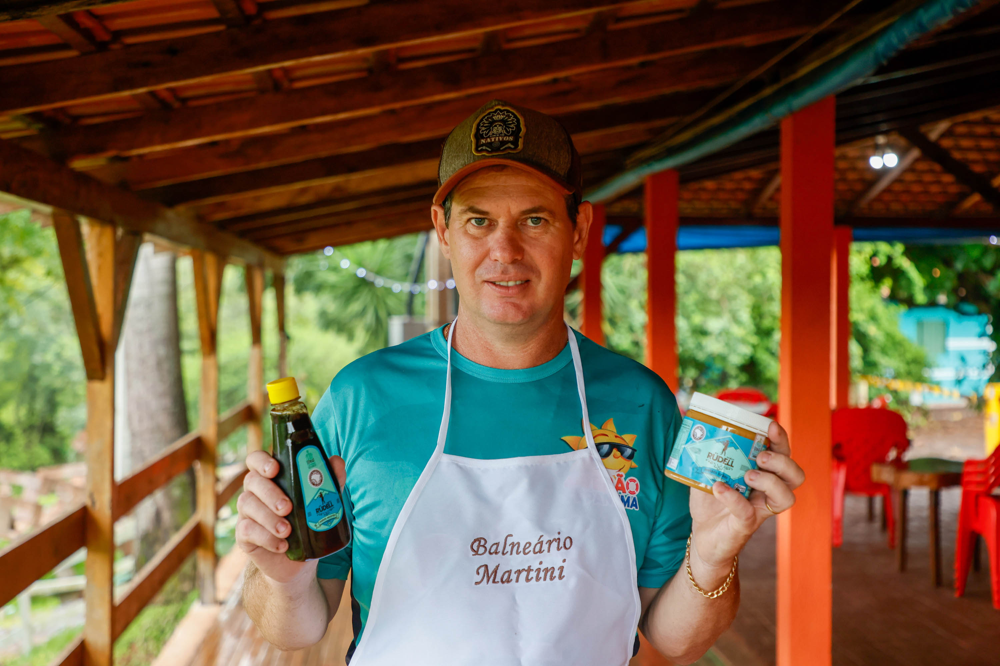

História da Feira do Melado
A Feira do Melado é um evento cultural, turístico e econômico que representa a alma da cidade de Capanema, no sudoeste do Paraná. Sua história se entrelaça com a trajetória dos agricultores familiares, dos engenhos de cana e da luta pela preservação das tradições do campo.
Desde os anos 1960, famílias de origem italiana, alemã e polonesa instalaram-se na região e passaram a cultivar cana-de-açúcar para produzir melado, rapadura e açúcar mascavo. Utilizando técnicas artesanais, como moendas movidas a tração animal ou motores, os produtores mantinham viva uma herança passada de geração em geração.
Por muitos anos, o melado foi um produto consumido apenas localmente. Mas o sabor marcante e natural do produto de Capanema começou a chamar atenção de visitantes e comerciantes da região. Foi então que surgiu a ideia de transformar esse patrimônio em algo maior.
Em 1998, sob a liderança do então prefeito João Carlos Silva, foi realizada a primeira edição oficial da Feira do Melado. A ideia era reunir produtores, artesãos, escolas e a comunidade em um evento que promovesse os produtos locais, a cultura do campo e o turismo rural.
A feira, inicialmente pequena e realizada na praça central da cidade, atraiu um grande público. Os visitantes podiam comprar melado fresco, rapaduras caseiras e produtos coloniais, além de assistir a apresentações de danças típicas, músicas tradicionais e oficinas educativas.
Com o sucesso das primeiras edições, a Feira do Melado foi incorporada ao calendário oficial do município. A cada ano, mais expositores e atrações eram adicionados. Durante a gestão da prefeita Maria Helena Lopes (2005–2012), a feira passou a contar com shows regionais, tendas temáticas, feira de agricultura familiar e área gastronômica.
A estrutura também evoluiu: o evento passou a ser realizado no Centro de Eventos Carlos Motter, com estandes organizados, palco principal e áreas cobertas. O foco na valorização da identidade cultural e da produção artesanal permaneceu como essência da feira.
historia2.jpg)
Além da comercialização de produtos, a feira se tornou um palco para as escolas municipais, que passaram a apresentar danças folclóricas, teatros temáticos e corais. O evento também passou a oferecer oficinas sobre produção sustentável, turismo rural e preservação das tradições locais.
A gastronomia ganhou destaque, com pratos típicos coloniais, derivados da cana e culinária artesanal. A cada ano, a Feira do Melado atraía mais turistas de toda a região Sudoeste e até de outros estados.
Durante a década de 2010, a feira manteve seu crescimento mesmo diante de desafios econômicos. Houve anos em que a feira contou com atrações nacionais e regionais, concursos culturais e exposições de agroindústrias. O foco foi ampliado para também valorizar o turismo sustentável e a capacitação dos produtores rurais.
Em alguns anos, devido a reformas ou limitações logísticas, a estrutura da feira foi adaptada, mas sempre preservando sua essência. O público, cada vez mais fiel, passou a ver o evento como parte da identidade de Capanema.
Durante os anos de 2020 e 2021, a pandemia da COVID-19 afetou diretamente a realização da feira. Em alguns momentos, o evento foi cancelado ou realizado de forma reduzida, com ações online, entrega de kits de melado e vídeos educativos sobre a produção artesanal.
Apesar das limitações, a organização do evento buscou manter viva a chama da tradição, com apoio da comunidade, escolas e produtores.
A partir de 2022, com o retorno das atividades presenciais, a Feira do Melado voltou com força total. A edição pós-pandemia bateu recordes de público, com uma programação completa: artistas de renome, exposição de agroindústrias, praça de alimentação rural, feira do artesanato, trilhas ecológicas e muito mais.
Hoje, a Feira do Melado é um dos maiores eventos culturais do Sudoeste do Paraná. Ela representa o passado, o presente e o futuro de Capanema. É símbolo de trabalho, identidade e orgulho de um povo que valoriza suas raízes e compartilha sua história com o mundo.
Que a Feira do Melado continue adoçando a história de Capanema por muitas gerações!
